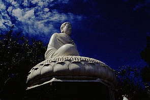
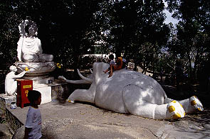
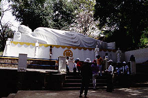

TichCaPhatDai/BaRia,VungTau
釈迦仏台/ブンタウ
釈迦仏台はブンタウの街の北にある寺だ。
線香売りや物乞いの子供達をかわしながら境内に入る。

天上天下唯我独尊君である。その上には白い大仏さんが。大きさは台座込みで10メートル位だろうか。

境内は傾斜地にあり所々に愉快な仲間達が点在している。
 
象さんの五体投地である。ダイナミックだ。しかしそのような仏教説話も何のその。
地元の子供達の遊具と化している。
象さんの奥には八角の東屋があり、その先には露天の土産屋が何軒か並んでいる。
売っているものは他愛の無いものだ。
何となくお寺というより眺めの良い公園といった雰囲気のところだ。

大きな寝釈迦もある。地元の人にも外国人観光客にもベトナム人の団体さんにも人気のスポットらしい。
物乞いの子供達はココに住んでいるのだろうか。ちょっとすえたスメルが・・・
寺の裏には幾つかの子院のような寺がある。
皆小さな寺ばかりだが庭先の観音像だけは立派でした。

次へ行きましょう
越南珍寺劇場
珍寺大道場 HOME